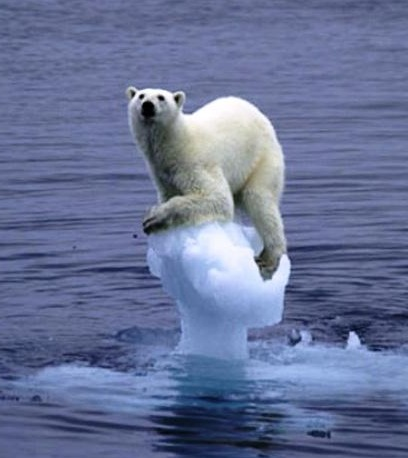
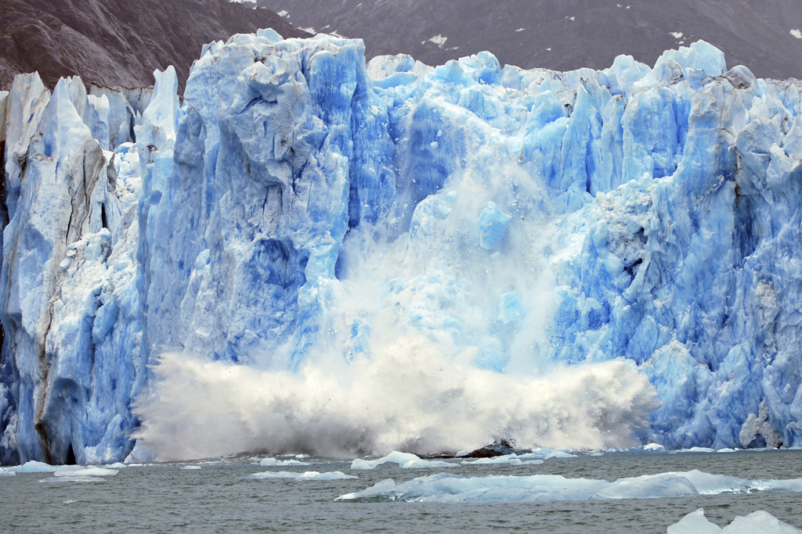
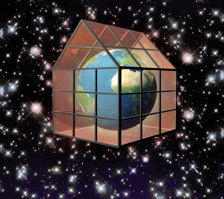

Incalzirea globala este fenomenul de crestere continua a temperaturilor medii inregistrate ale atmosferei in imediata apropiere a solului, precum si a apei oceanelor, constatata in ultimele doua secole, dar mai ales in ultimele decenii. Fenomene de incalzire globala au existat dintotdeauna in istoria Pamantului, ele fiind asociate cu fenomenul cosmic de maximum solar, acestea alternand cu mici glaciatiuni terestre asociate cu fenomenul de minimum solara.  Pamantul este acum mai cald decat oricand in ultimii o mie de ani.In decursul unei perioade mari de timp (ere glaciare), Pamantul a fost acoperit de gheata aproape in intregime. O mare parte din gheata se gasea in ghetari, cum ar fi acesta din Antarctida. Cand ardem combustibili, in atmosfera se elibereaza gaze. Emisiile de gaze datorate activitatilor umane au crescut in secolul XIX, atunci cand oamenii au inceput sa arda carbune in fabrici pentru a produce energie. Si, odata cu cresterea emisiilor de gaze, a crescut si temperatura Pamantului.
Pamantul s-a format acum 4,6 miliarde de ani si temperatura lui s-a modificat de-a lungul timpului. In trecut a fost mai cald decat astazi si uneori a fost mai frig. Dar viteza cu care se incalzeste Pamantul a devenit alarmanta. Pentru prima oara in istorie, fiintele umane, si nu natura, reprezina principala cauza a schimbarii climatice - cunoscuta si sub numele de incalzire globala.
Cu milioane de ani in urma cand plantele si animalele mureau, erau acoperite, zdrobite si se fosilizau in pamant. Petrolul, carbunele si gazul natural s-au format din aceste resturi fosile - iata de ce se numesc combustibili fosili. Cand ardem combustibili fosili producem cantitati mari de carbon care intra in compozitia dioxidului de carbon(CO2) El poate fi produs natural si de alte surse, cum ar fi vulcanii, dar oamenii si masinile produc mai mult CO2 decat oricand in trecut. 
Gazele de sera absorb caldura Soarelui si contribuie la incalzirea planetei, facand posibila existenta plantelor si a animalelor. Majoritatea gazelor de sera reprezinta un element natural al vietii. De exemplu oamenii elimina din plamani, atunci cand respira, cantitati mici de dioxid de carbon. Dar activitatile umane sunt cauza acumularii unor cantitati prea mari de gaze. Multi savanti considera ca aceasta crestere a gazelor de sera reprezinta motivul incalzirii globale. Efectul de sera Efectul de sera este un proces natural, descoperit in anul 1896, prin care o parte a radiatiei terestre in infrarosu este retinuta de atmosfera terestra. Efectul de sera este cauzat de cantitatile de dioxid de carbon si a altor substante, ce se acumuleaza in straturi formand o -plapuma-. Aceste substante dau posibilitate razelor ultra violete sa treaca foarte usor, ajungand la suprafata solului, transformandu-se in energie termica, iar aceasta energie trecand mult mai greu inapoi, formand efectul de sera. Gazele lasa lumina sa patrunda, insa nu permite caldurii sa scape, precum geamurile de sticla dintr-o sera. Efectul de sera a asigurat caldura planetei noastre, astfel incat viata s-a dezvoltat miliarde de ani. Dar odata cu cresterea cantitatii de gaze cu efect de sera, in atmosfera a crescut nivelul de caldura. Acest proces natural s-a accelerat si Pamantul se tot incalzeste.
Cresterea populatiei Pamantului reprezinta unul dintre factorii cei mai importanti ai incalzirii globale. Populatia de pe glob a crescut de aproape 4 ori in ultimii 100 de ani. Mai multi oameni inseamna mai multi combustibili fosili arsi. Acest lucru a dus la o crestere accentuata a nivelului gazelor de sera din atmosfera Pamantului.